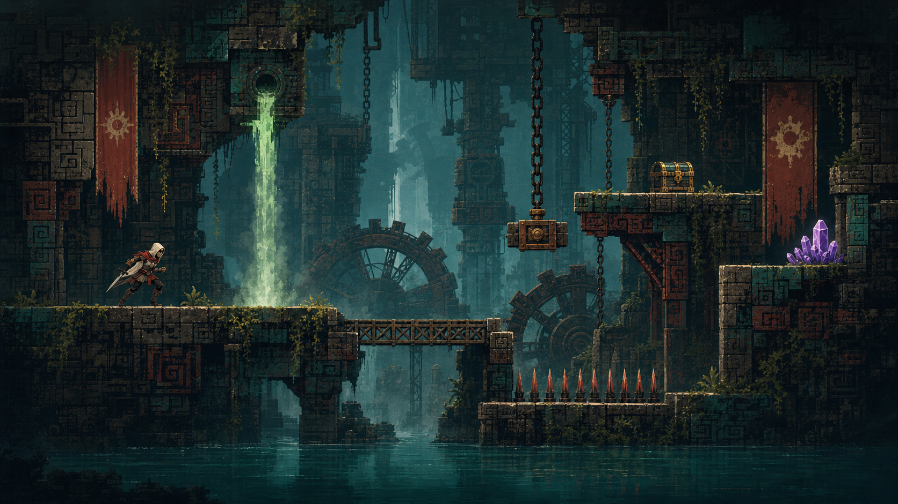

CBWORLD COMPONENT LAB
Flooded Works · interaction proof
Fixed base / state overlay
ART DIRECTION → RUNTIME CONTRACT
원경은 크게, 상호작용 상태는 얇게 겹친다.
카메라는 하나의 큰 배경 평면을 잘라 보고, 지형지물은 고정된 베이스 위에 상태 오버레이만 교체합니다.
아래 두 컴포넌트는 실제 게임 타이밍과 충돌 규칙을 그대로 사용합니다.
01 One background plane02 One immutable base03 State-owned overlays
01 · CAMERA COVERAGE
화면보다 큰 단일 원경
1 visual plane
배경의 논리 크기는 스테이지 경계에 256px 오버스캔을 더한 9,472 × 1,952입니다.
화면은 그 안을 이동하며 필요한 부분만 보여줍니다. 권장 출력은 0.75px/world의 7,104 × 1,464이고,
4개 조각(각 1,776 × 1,464 + 16px bleed)은 로딩을 위한 기술적 분할일 뿐 미술 계층은 하나입니다.
VIEWPORT

chunk 01 / 02
chunk 02 / 03
chunk 03 / 04
CAM X 0 · Y 0SIMULATION · SOURCE 1672×941
현재 1,672×941 그림을 큰 논리 평면에 매핑한 분위기·카메라 시뮬레이션입니다. 제작용 7,104×1,464 원경에서는
플레이어와 발판·함정처럼 상호작용 가능한 실루엣을 제거하고, 실제 디테일을 채운 4개 연속 조각을 사용합니다.
Stage bounds
8,960 × 1,440
Background bounds
9,472 × 1,952
Overscan
256 px / edge
Coverage
7.4 screens wide
02 · STATE OVERLAYS
같은 베이스, 다른 상태
2 runtime components
상태 버튼을 눌러 베이스가 다시 그려지지 않는지 확인할 수 있습니다. Overlay만 켜 보면 상태 레이어의 실제 분리 범위가 드러납니다.